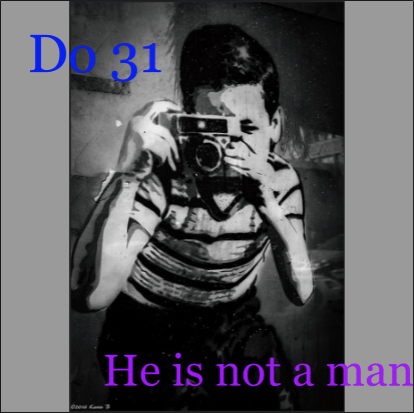

Challenge: Design A Band
Challenge Background
Design Thinking is creating an idea or item that could be useful for the people. We are studying this term because we are gathering random ideas from random sources on Wikipedia and put all together that will make sense but also appeal to the interest of the people. We need the people's opinion because I need to have empathy for them and to have an idea of what image to look for and how the album cover should look like. The steps for DEEP Design Thinking would be having people take a survey to get what are they like or they don't. I asked them what font they prefer, serif or san serif, what is their favorite color, and what type of image they like, realistic or abstract. The results were blue and purple colors, serif font, and an abstract image. After the survey, I looked for the best images that will connect to most of the results of the survey.
Album Cover
Band Biography
What enters the ears of listeners across the world, is as comparable to a deaf person hearing their voice for the first time. Before the release of the album "He is not a man," Do 31 knew the project they were releasing was going to be out of this planet, something that couldn't be developed by an average producer with a consicous for music and sound. The title "He is not a man" is a say that the group were from another world. A mind far developed from humans in the world of music, to the point where they are almost extra terrestrials. The album art is a representation of the idea of a great of a group of extra terrestrials, watching the world accepting the art of the sound that was created.
Dornier Green William and Paul Jackson are the founding members of The Triple Platinum Emmy winning band "Do 31." They were originated from San Francisco but traveled to Portland to become an independent band that began the band with principal to never sell out to commercial success for at the belief of staying true in the sense of creating art for pleasure, not money. The beginning of the journey, all band mates were at the age of 22, in an age where you can't tell motherf***ers they can't achieve anything, because their self-confidence won't be diminshed by the world.
They're unimaginable minds of creative greatness, has prerelled them to become legends of hip-hop with only one album released. Do 31 relied on their unique style of perception of seeing the world as the biggest source of sounds. By using sounds of the world, Do 31 created a sound that the rap world has never heard. The abstract sound and textures in every track reminds people of Q-Tip, J Dilla, and Dr. Dre all in one, and even that is incomparable. The production team is on a different planet, at its own league in the music world.
This is the one of the tracks from the album.